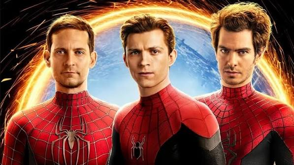
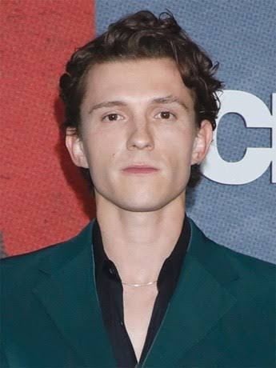
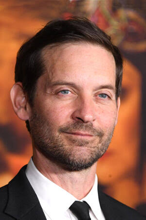

Days
Hours
Minutes
Seconds

Spider-Man: No Way Home director Jon Watts altered the introductions of Tobey Maguire and Andrew Garfield after discovering that Reddit users had accurately predicted the original, more traditional scenes. Instead of a somber, dramatic rooftop debut, the team switched to a humorous, subverted introduction inside Ned’s grandmother’s kitchen to avoid spoilers and catch the audience off-guard.

